M: rede com recorte geométrico de 25 km¶
O modelo M é o modelo K (a rede que lê a imagem inteira da DDM, de 5 medidas da trilha) com uma mudança: antes de a rede ler cada imagem, os pixels cujo pedaço de mar fica fora de um quadrado de 25 km em volta do ponto de medida são apagados. O objetivo não é errar menos que o K. É manter o ganho do K sobre o produto oficial com a resolução fixa em 25 km, como o produto da NASA, coisa que o K não garante.
Resumo
- O problema: o K vê uma área de mar de 50 a 90 km de lado, que ainda muda com o ângulo de incidência. Um vento cuja resolução varia de medida para medida é difícil de usar e de comparar; o produto oficial representa sempre cerca de 25 × 25 km.
- A ideia: calcular, pela geometria de cada medida (posições e velocidades do satélite, do GPS e do ponto de reflexão), onde cada pixel da DDM está no mar, e dar a cada pixel um peso de 0 a 1: a fração do seu pedaço de mar que cai dentro do quadrado de 25 km. A rede lê a imagem multiplicada por esses pesos, e os próprios pesos como um canal a mais.
- O que isso garante: a área de onde vem o vento do M é a do produto oficial, em todos os ângulos, e o M continua lendo 5 medidas da trilha onde o produto oficial lê só 1 ou 2.
- Resultado em 2022 (282 dias, 38,9 milhões de medidas): o M fica entre o oficial e o K. Contra o escaterômetro, o RMSD geral é 1,46 m/s do oficial, 1,38 do K e 1,41 do M. Por faixa, o M erra 0,02 a 0,04 m/s mais que o K até 12 m/s e 0,07 a 0,18 m/s mais de 12 a 20 m/s; erra menos que o oficial no vento fraco e de 8 a 18 m/s, e empata com ele de 2 a 8 m/s.
- Situação: candidato a produto de 25 km. Falta a verificação da resolução com a rede treinada (a resposta da rede a uma borda no mar) e a comparação com boias.
De onde veio a ideia¶
O modelo K é a melhor abordagem até agora: 6% menos erro que o produto oficial contra o escaterômetro, e o ganho maior é no vento forte, de 10 a 18 m/s. Mas o K lê a imagem inteira da DDM, 17 × 11 pixels, e os pixels longe do centro correspondem a pedaços de mar longe do ponto de reflexão. Na geometria nominal, a imagem inteira de 5 medidas cobre de 48 a 91 km de lado, conforme o ângulo (história 19). O modelo I, a mesma rede lendo só o recorte de 3 × 5 pixels do produto oficial, empata com o oficial: o ganho do K vem, ao menos em parte, de ver mais mar.
Isso cria dois problemas para um produto:
- A resolução não é 25 km. O vento do K representa uma área maior que a do produto oficial, e não se sabe exatamente qual.
- A resolução varia. A área que a imagem inteira cobre cresce com o ângulo de incidência. Dois ventos vizinhos do K, medidos em ângulos diferentes, representam áreas diferentes. Para quem usa o produto (assimilação em modelos, estudos de frentes e de costa, comparação com boias), um vento de resolução variável é um problema, e foi assim que o INPE o descreveu.
O produto oficial resolve isso de um jeito que custa sinal: usa só a janela de 3 × 5 pixels e, quando ela cobre menos que 25 km, faz a média de medidas seguidas da trilha, de 5 medidas em ângulos pequenos até 1 medida acima de uns 48° (a área que cada vento representa). Nos ângulos altos, onde o sinal é mais fraco, o produto joga fora 4 das 5 medidas.
A ideia do M: em vez de escolher pixels pela posição na imagem (a janela de 3 × 5) e medidas por uma tabela de ângulo, calcular onde cada pixel de cada medida está no mar e manter o que cai dentro de um quadrado de 25 km, em todas as 5 medidas, em todos os ângulos.
A hipótese¶
Uma rede que lê só o que está dentro dos 25 km, mas lê isso em 5 medidas da trilha e com a imagem inteira dentro do quadrado (não só 3 × 5 pixels), erra menos que o produto oficial e fica perto do K. O que ela ganha sobre o oficial vem de ler melhor o sinal dentro da mesma área, e não de ver uma área maior. Antes de rodar, escrevemos que o M ficaria entre o oficial e o K: se o M ficasse igual ao K, o K não estaria usando a área fora dos 25 km; se ficasse igual ao oficial, o ganho do K seria todo da área extra.
Como o recorte é calculado¶
1. Onde cada pixel está no mar¶
Um pixel da DDM é definido por um atraso (o quanto o caminho GPS → mar → satélite é mais longo que o caminho até o ponto especular) e um desvio Doppler (a diferença de frequência causada pelo movimento do satélite e do GPS). Os pontos do mar com o mesmo atraso formam um anel em volta do ponto especular; os pontos com o mesmo Doppler formam uma faixa. Um pixel é o cruzamento de um anel com uma faixa (GNSS-R e a DDM).
O arquivo L1 do CYGNSS traz, para cada DDM, as posições e velocidades do satélite, do transmissor GPS e do ponto especular, e em que pixel (linha e coluna) o ponto especular caiu. Com isso, para qualquer ponto P do mar, calcula-se:
- o atraso de
P: o comprimento do caminho GPS →P→ satélite menos o do caminho GPS → especular → satélite, dividido pelo tamanho de um pixel de atraso (0,255 chip, ou 74,8 m de caminho); - o Doppler de
P: a projeção das velocidades do GPS e do satélite nas direções atéP, menos a mesma projeção para o especular, dividida por 500 Hz.
O resultado é a posição fracionária (linha, coluna) de P na DDM. A figura abaixo mostra isso para uma malha de pontos do mar em volta do ponto de medida, em dois ângulos de incidência. As linhas brancas contínuas são os limites entre pixels de atraso (os anéis); as pontilhadas, entre pixels de Doppler (as faixas). A estrela é o ponto especular e o quadrado tracejado é a região de 25 km.
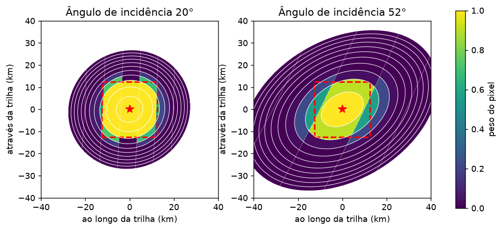
Dois pontos a notar. Em 20° os anéis são quase círculos de poucos km, e a imagem inteira cobre uns 55 km. Em 52° os anéis viram elipses alongadas, e a imagem inteira passa de 80 km. É por isso que a área que o K vê cresce com o ângulo. O quadrado de 25 km, em compensação, é sempre o mesmo.
O mar é tratado como uma esfera com o raio de curvatura local da Terra, tangente ao elipsoide no ponto de medida, e as contas são feitas num sistema de eixos com origem no ponto de medida (um eixo ao longo da trilha, outro através, outro na vertical). Um teste garante que a altura dessa esfera difere do elipsoide por menos de 5 m a 30 km do centro, o que é 7% de um pixel de atraso. O ponto de medida é a média dos pontos especulares das duas medidas centrais da janela de 5 (que é como o produto oficial centra a média no tempo).
2. O peso de cada pixel¶
O valor de um pixel é a soma da energia que vem de todo o seu pedaço de mar. Se metade desse pedaço está dentro do quadrado e metade fora, metade do sinal do pixel vem de fora. O peso de um pixel é definido como essa fração:
peso do pixel = área do pedaço de mar do pixel que está dentro do quadrado ÷ área total do pedaço de mar do pixel
Para calcular isso, uma malha de pontos do mar com 0,75 km de passo, até 45 km do centro (14.400 pontos), é projetada na DDM pelo passo 1. Cada ponto cai num pixel; somam-se as áreas dos pontos de cada pixel, com e sem a condição de estar dentro do quadrado, e divide-se. As duas somas saem de um único produto de matrizes, para todos os 187 pixels de uma vez. Pixels cujo pedaço de mar está todo dentro do quadrado têm peso 1; todo fora, peso 0; na borda, um valor entre os dois.
A figura abaixo mostra três pixels de uma mesma DDM a 35°, com o pedaço de mar de cada um pintado: a parte dentro do quadrado em azul escuro, fora em azul claro.
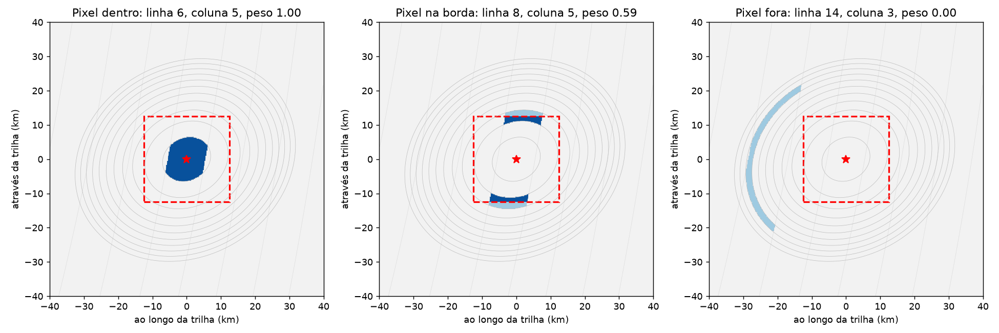
- Pixel dentro (linha 6, coluna 4): uma mancha de poucos km ao lado do ponto especular, toda dentro do quadrado. Peso 1.
- Pixel na borda (linha 8, coluna 5): duas manchas, uma de cada lado da trilha, cortadas pela borda do quadrado. Peso 0,59.
- Pixel fora (linha 14, coluna 3): um arco de anel a 25 a 30 km do centro. Peso 0.
Por que o pedaço de mar e não a função de ambiguidade
Um pixel não recebe energia só do cruzamento exato do anel com a faixa: o sinal de GPS é "borrado" por uma função de ambiguidade de ±1 chip em atraso e cerca de ±1 kHz em Doppler. Testamos as duas definições de pedaço de mar. A área eff_scatter que o próprio L1 informa para cada pixel bate com o cruzamento simples (razão de 0,76 a 0,86 em todos os ângulos), e não com a área borrada, que é 5 a 6 vezes maior. Além disso, pesos calculados com a área borrada ficam espalhados perto de 0,5 nos pixels da borda e deixam vazar mais sinal de fora (6% a 11% em 43° a 52°). Por isso os pesos usam o cruzamento simples. O borrão existe, e é levado em conta na medida da resolução (adiante), que é feita com a física completa.
3. O plano de pesos de cada medida¶
Fazendo isso para todos os pixels, cada DDM ganha um plano de pesos de 17 × 11. A figura abaixo mostra esse plano para a medida central em cinco ângulos de incidência. A estrela é o ponto especular; o retângulo vermelho é a janela de 3 × 5 pixels do produto oficial, com o número de medidas da trilha que o oficial usa naquele ângulo.
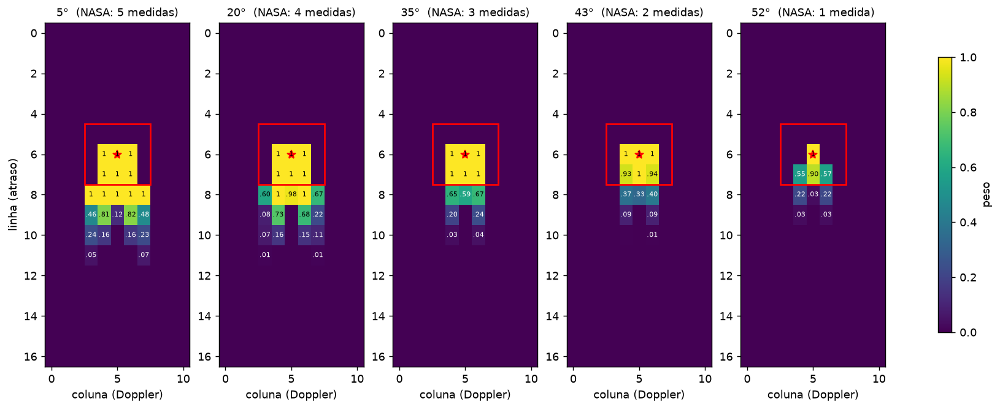
O que se vê:
- Em 5° o quadrado de 25 km é maior que a janela de 3 × 5: cabem nele quase 5 linhas de atraso inteiras e as bordas. O oficial compensa a janela pequena com a média de 5 medidas; o M lê mais pixels de cada medida e também as 5 medidas.
- Em 35° o quadrado coincide quase exatamente com a janela de 3 × 5 (a linha 8 fica na borda, com pesos de 0,6).
- Em 52° a janela de 3 × 5 do oficial já é maior que 25 km: dois dos seus pixels na linha 7 ficam com peso 0,55, e a linha 8 quase some. É nesse ângulo que o oficial usa 1 medida só. O M lê os mesmos 25 km, mas de 5 medidas.
Como a região fica parada no ponto de medida e o ponto especular anda 6 km por medida, cada uma das 5 medidas tem um plano de pesos diferente: nas medidas das pontas, o quadrado cai deslocado na DDM, sobre pixels de atraso maior de um lado só da trilha. A figura abaixo mostra as 5 medidas de uma janela a 35°.
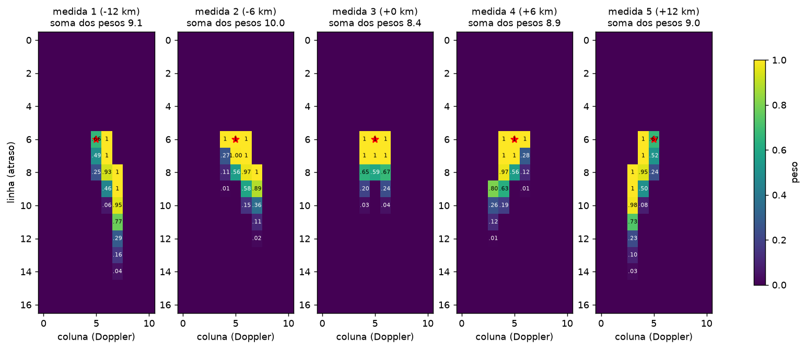
4. O que a rede lê¶
A rede do M é a mesma rede do K, com a mesma arquitetura e os mesmos 219 mil parâmetros, treinada do zero. A diferença está na entrada:
- a imagem da DDM é multiplicada pelo plano de pesos, pixel a pixel: o que está fora dos 25 km vira zero, a borda fica atenuada;
- o plano de pesos entra como um canal a mais da imagem, para que a rede saiba quanto de cada pixel foi cortado (um pixel com peso 0,5 e metade do sinal não é a mesma coisa que um pixel inteiro com sinal fraco).
A figura abaixo mostra isso numa DDM real de 25/06/2022 (satélite 1, 35° de incidência, vento oficial de 8,3 m/s): a imagem como o K a lê, o plano de pesos, e o produto dos dois, que é o que o M lê.
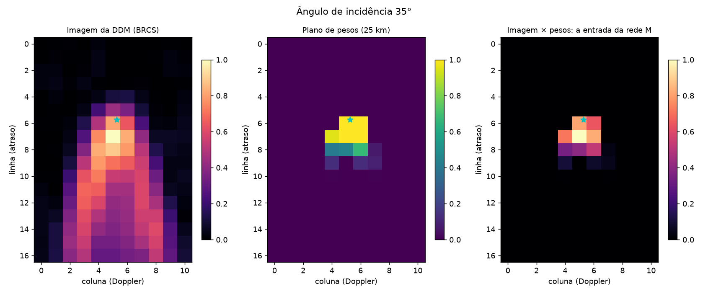
O K vê a cauda inteira do sinal, que se estende até a linha 16: são pedaços de mar a 30, 40 km do ponto. O M vê o pico e as duas primeiras linhas depois dele.
Os pesos são calculados dentro da própria rede, na hora, a partir de 17 números por DDM (posições, velocidades, ponto especular e o seu pixel), sem gradiente. Guardá-los seria 187 números por DDM para 36 milhões de DDMs. O cálculo roda em lotes de 64 DDMs na GPU. A configuração da rede guarda tudo de que os pesos dependem (a função de peso, o sinal do eixo Doppler, o tamanho dos pixels, a malha, o formato do arquivo), para que uma mudança futura nunca altere uma rede já treinada.
O sinal do eixo Doppler
As contas dizem onde cada ponto do mar cai na DDM, mas a geometria sozinha não distingue se uma coluna a mais é uma frequência maior ou menor: as áreas são simétricas. O L1 usa a convenção de que uma coluna maior é uma frequência maior. Confirmamos num dia real com um observável assimétrico: o centro de massa do sinal em Doppler deve cair do lado para onde o satélite se move, e caiu em 82% de 600 DDMs.
A região que cada leitura enxerga¶
Os pesos dizem que fração de cada pixel está dentro do quadrado. Mas isso, sozinho, não prova que o vento do M vem dos 25 km: um pixel da borda, com peso 0,5, ainda recebe metade do seu sinal de fora, e o borrão da função de ambiguidade espalha a energia de um ponto do mar por vários pixels. Por isso a resolução foi medida com um modelo direto independente dos pesos: uma fonte unitária é colocada em cada ponto do mar, a energia dela é espalhada pelos pixels pela função de ambiguidade completa, os pixels são pesados e somados, e a soma é a sensibilidade da leitura àquele ponto. Isso foi feito para três leituras:
| Leitura | O que pesa | Medidas da trilha |
|---|---|---|
| NASA (o plano do produto oficial) | 1 nos 3 × 5 pixels da janela, 0 fora | 1 a 5, pela tabela de ângulo |
| K (imagem inteira) | 1 em todos os pixels | 5 |
| M (recorte geométrico) | os pesos do passo 2 | 5 |
A figura abaixo é o mapa da sensibilidade das três leituras a 43° (média sobre três orientações do plano de incidência em relação à trilha). A linha ciano é onde a sensibilidade cai à metade da do centro; o quadrado branco é a região de 25 km.
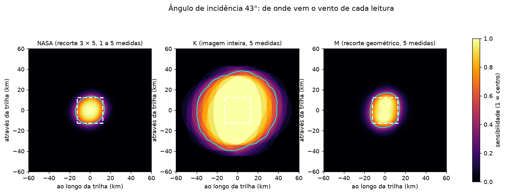
O K pega sinal de uma área de uns 80 km de lado a 43°; a meia altura está a 26 km da borda do quadrado. A NASA e o M ficam dentro do quadrado, com a meia altura a 2 km da borda. O mesmo corte, ao longo da trilha, em quatro ângulos:
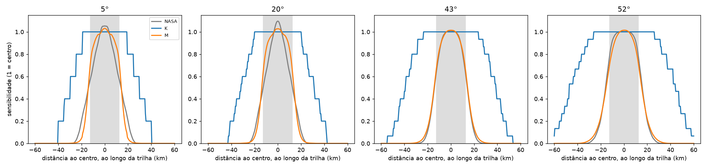
E os três números que resumem a resolução, por ângulo: onde a sensibilidade cai a 50% (em km além da borda dos 25 km), que fração da sensibilidade vem de mais de 10 km além da borda (o vazamento), e que fração vem de dentro do quadrado:
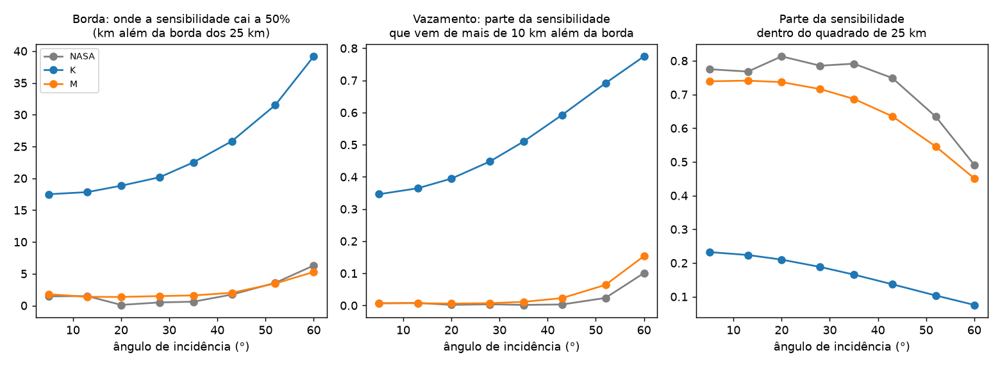
| Ângulo | Leitura | Medidas | Dentro do quadrado | Vazamento além de 10 km | Borda a 50% (km) | Largura da borda, 10% a 90% (km) |
|---|---|---|---|---|---|---|
| 5° | K | 5 | 0,22 | 0,34 | 17,5 | 21,0 |
| 5° | NASA | 5 | 0,77 | 0,01 | 1,4 | 9,7 |
| 5° | M | 5 | 0,74 | 0,01 | 1,8 | 6,2 |
| 20° | K | 5 | 0,20 | 0,39 | 18,8 | 20,7 |
| 20° | NASA | 4 | 0,81 | 0,00 | 0,1 | 7,8 |
| 20° | M | 5 | 0,74 | 0,01 | 1,4 | 6,2 |
| 43° | K | 5 | 0,13 | 0,59 | 25,8 | 20,0 |
| 43° | NASA | 2 | 0,75 | 0,00 | 1,7 | 7,2 |
| 43° | M | 5 | 0,64 | 0,02 | 2,0 | 8,4 |
| 52° | K | 5 | 0,10 | 0,69 | 31,5 | 20,0 |
| 52° | NASA | 1 | 0,63 | 0,02 | 3,6 | 8,8 |
| 52° | M | 5 | 0,55 | 0,06 | 3,5 | 10,8 |
O que isso diz:
- O K não tem resolução de 25 km, e a dele varia com o ângulo. De um terço (5°) a dois terços (52°) do sinal que o K usa vem de mais de 10 km além da borda do quadrado, e a sua meia altura vai de 17 a 31 km além da borda. Um vento do K a 52° representa uma área quase duas vezes maior que um a 5°.
- O M tem a resolução da NASA. Até 43° o vazamento do M é de 1% a 2%, como o da NASA, e a borda é tão nítida ou mais (6 a 8 km de largura). Em 52° o M vaza 6% contra 2% da NASA e a borda tem 11 km contra 9: ali os pixels da DDM têm 10 km de comprimento, e um pixel cortado ao meio ainda deixa passar metade do seu sinal.
- O M mantém as 5 medidas onde a NASA fica com 1 ou 2. É daí que o M pode tirar algum ganho sobre a NASA sem alargar a região.
Antes de ver os números, o critério escrito era: em cada ângulo, o vazamento do M não pode ser maior que o da NASA, a borda não pode ser mais que 3 km mais larga e ao menos metade da sensibilidade deve vir de dentro. O critério vale em 5°, 20° e 43° (em 43° com 2% de vazamento contra 0%) e falha em 52° por 4 pontos percentuais de vazamento. Uma região menor que 25 km não ajuda (o vazamento cresce quando o quadrado encolhe, porque os pixels da borda ficam proporcionalmente maiores).
O que ainda não foi medido
Essa é a região da entrada da rede. Falta a verificação com a rede treinada: aplicar o M a DDMs sintéticas com uma borda de vento (fraco de um lado, forte do outro) e ver como o vento estimado muda quando a borda cruza o quadrado. É o único jeito de garantir que a rede não aprendeu a tirar informação dos pixels da borda além do que os pesos permitem.
O que foi testado¶
| Item | Valor |
|---|---|
| Treino | 2021, o mesmo conjunto do K: 7,3 milhões de medidas de 302 dias |
| Validação | os mesmos 31 dias de 2021 do K, fora do treino |
| Teste | 2022, nos dias e nas medidas que o M, o K e o oficial têm |
| Referência do treino | ERA5 |
| A rede | a do K (219 mil parâmetros), com a entrada multiplicada pelos pesos e os pesos como quarto canal |
| Sementes | 3 treinos com sementes diferentes; o M das tabelas é a média dos três |
| Ajuste final | a mesma correção de distribuição do K, ajustada nos dias de validação de 2021 |
| Região | quadrado de 25 km de lado, centrado no ponto de medida, com os lados ao longo e através da trilha |
Na validação de 2021 o M ficou em 1,43 a 1,46 m/s de RMSD contra o ERA5 nas três sementes, o mesmo intervalo do K e das redes de controle.
Resultados em 2022¶
As tabelas comparam NASA (o produto oficial), K e M, nas mesmas medidas, por faixa de 2 m/s do vento da referência. n é o número de medidas da faixa. O M é a média das três sementes. O RMSD e o viés estão em tabelas separadas.
Período
Os números abaixo são de 282 dias de 2022, de 1º de fevereiro a 26 de novembro: 94 lotes de 3 dias, com 38,9 milhões de medidas que o M, o K e o oficial têm em comum e que o escaterômetro cobre. Faltam 3 lotes (9 dias) cujos arquivos de DDM precisam ser refeitos.
Contra o escaterômetro¶
RMSD (m/s):
| Faixa (m/s) | n | NASA | K | M |
|---|---|---|---|---|
| todos | 38.870.733 | 1,46 | 1,38 | 1,41 |
| 0–2 | 1.045.916 | 1,06 | 0,86 | 0,88 |
| 2–4 | 4.341.981 | 1,08 | 1,02 | 1,06 |
| 4–6 | 9.103.636 | 1,24 | 1,23 | 1,26 |
| 6–8 | 11.537.835 | 1,36 | 1,35 | 1,37 |
| 8–10 | 7.918.147 | 1,50 | 1,45 | 1,47 |
| 10–12 | 3.357.295 | 1,90 | 1,67 | 1,71 |
| 12–14 | 1.125.611 | 2,45 | 2,06 | 2,13 |
| 14–16 | 332.355 | 2,85 | 2,51 | 2,62 |
| 16–18 | 83.655 | 3,22 | 3,01 | 3,16 |
| 18–20 | 18.678 | 3,51 | 3,40 | 3,58 |
| 20 ou mais | 5.624 | 3,78 | 3,76 | 4,28 |
Viés (m/s, estimativa menos referência):
| Faixa (m/s) | n | NASA | K | M |
|---|---|---|---|---|
| todos | 38.870.733 | +0,08 | −0,13 | −0,15 |
| 0–2 | 1.045.916 | +0,55 | +0,27 | +0,28 |
| 2–4 | 4.341.981 | +0,24 | −0,05 | −0,05 |
| 4–6 | 9.103.636 | +0,35 | +0,00 | −0,02 |
| 6–8 | 11.537.835 | +0,34 | +0,02 | +0,00 |
| 8–10 | 7.918.147 | −0,09 | −0,17 | −0,20 |
| 10–12 | 3.357.295 | −0,74 | −0,58 | −0,61 |
| 12–14 | 1.125.611 | −1,38 | −1,10 | −1,15 |
| 14–16 | 332.355 | −1,74 | −1,52 | −1,53 |
| 16–18 | 83.655 | −2,21 | −2,03 | −1,96 |
| 18–20 | 18.678 | −2,60 | −2,37 | −2,11 |
| 20 ou mais | 5.624 | −2,57 | −1,78 | −1,21 |
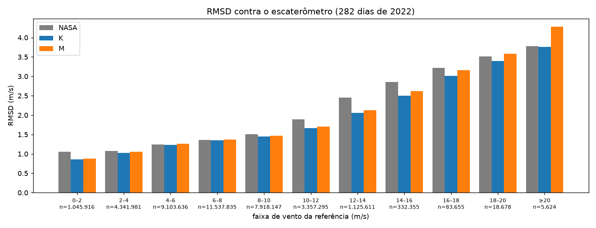
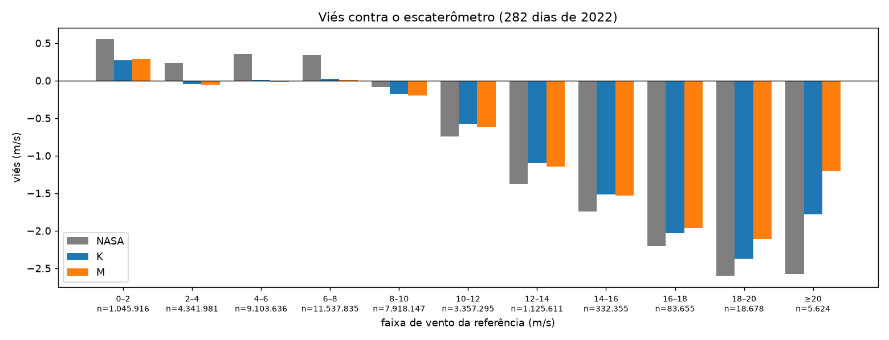
Contra o ERA5¶
RMSD (m/s):
| Faixa (m/s) | n | NASA | K | M |
|---|---|---|---|---|
| todos | 38.870.733 | 1,57 | 1,44 | 1,47 |
| 0–2 | 1.500.862 | 1,79 | 1,57 | 1,59 |
| 2–4 | 5.125.633 | 1,51 | 1,38 | 1,40 |
| 4–6 | 9.036.648 | 1,47 | 1,39 | 1,41 |
| 6–8 | 11.225.618 | 1,45 | 1,38 | 1,40 |
| 8–10 | 7.609.137 | 1,52 | 1,42 | 1,44 |
| 10–12 | 3.062.209 | 1,86 | 1,57 | 1,60 |
| 12–14 | 943.871 | 2,34 | 1,87 | 1,95 |
| 14–16 | 274.351 | 2,63 | 2,26 | 2,39 |
| 16–18 | 70.387 | 2,93 | 2,69 | 2,84 |
| 18–20 | 17.097 | 3,25 | 3,15 | 3,49 |
| 20 ou mais | 4.920 | 3,54 | 3,63 | 4,06 |
Viés (m/s):
| Faixa (m/s) | n | NASA | K | M |
|---|---|---|---|---|
| todos | 38.870.733 | +0,31 | +0,11 | +0,09 |
| 0–2 | 1.500.862 | +1,15 | +0,84 | +0,86 |
| 2–4 | 5.125.633 | +0,67 | +0,37 | +0,36 |
| 4–6 | 9.036.648 | +0,60 | +0,24 | +0,21 |
| 6–8 | 11.225.618 | +0,45 | +0,15 | +0,13 |
| 8–10 | 7.609.137 | −0,00 | −0,05 | −0,07 |
| 10–12 | 3.062.209 | −0,60 | −0,39 | −0,43 |
| 12–14 | 943.871 | −1,14 | −0,82 | −0,86 |
| 14–16 | 274.351 | −1,46 | −1,21 | −1,22 |
| 16–18 | 70.387 | −1,96 | −1,76 | −1,68 |
| 18–20 | 17.097 | −2,13 | −1,84 | −1,48 |
| 20 ou mais | 4.920 | −2,49 | −1,67 | −1,10 |
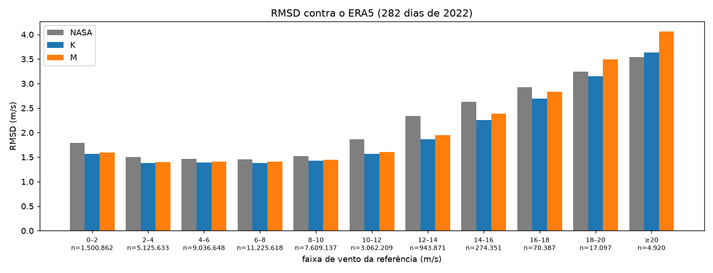
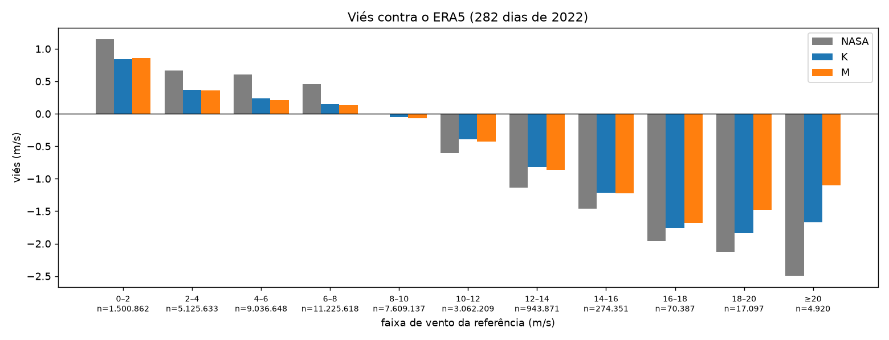
Intervalos de confiança¶
A diferença relativa de RMSD entre o M e cada um dos outros dois, com o intervalo de 95% de um bootstrap pareado por dia (500 reamostragens dos 282 dias; os três modelos são avaliados nas mesmas medidas, por isso o intervalo é estreito mesmo quando a diferença é pequena). Positivo é o M errando mais.
| Comparação | Contra o escaterômetro | Contra o ERA5 |
|---|---|---|
| M em relação ao K | +2,3% [+2,1; +2,4] | +1,8% [+1,6; +2,0] |
| M em relação à NASA | −3,0% [−3,6; −2,5] | −6,5% [−7,1; −5,9] |
Os dois intervalos excluem o zero: o M erra mais que o K e menos que a NASA, e as duas diferenças são reais. Mas as duas são menores que a diferença material da história 19, o dobro da maior distância entre duas sementes do mesmo treino (9,2% contra o escaterômetro, 7,7% contra o ERA5): pelo critério do projeto, o M é equivalente ao K. As três sementes do M, uma a uma, dão 1,44, 1,41 e 1,38 m/s contra o escaterômetro; a terceira empata com o K (1,38). A dispersão entre sementes é maior que a diferença entre o M e o K, e é o que limita a conclusão.
Por ângulo de incidência, contra o escaterômetro (a faixa de ângulo é a da medida central):
| Ângulo | n | M em relação ao K | M em relação à NASA |
|---|---|---|---|
| 0–17° | 5.066.842 | +1,5% [+1,1; +1,8] | +3,7% [+2,6; +4,8] |
| 17–31° | 12.290.917 | +1,0% [+0,7; +1,3] | −4,9% [−5,7; −4,2] |
| 31–41° | 7.916.640 | +2,9% [+2,7; +3,1] | −2,5% [−3,1; −1,8] |
| 41–48° | 4.661.567 | +3,2% [+2,9; +3,4] | −4,4% [−5,2; −3,6] |
| 48–55° | 4.309.104 | +3,7% [+3,5; +4,0] | −5,4% [−6,1; −4,5] |
| 55–65° | 4.625.663 | +5,3% [+5,0; +5,7] | −1,9% [−2,7; −1,0] |
O custo do recorte em relação ao K cresce com o ângulo, de 1% abaixo de 31° a 5% acima de 55°: nos ângulos altos os pixels são maiores (até 10 km) e o recorte de 25 km apaga mais da imagem que o K lê. Abaixo de 17° o M erra 4% mais que a NASA, a única faixa de ângulo em que isso acontece; é onde a janela do produto oficial é menor que 25 km e os pixels são pequenos. O motivo ainda não foi investigado.
Como ler as tabelas¶
- A faixa é do vento da referência (escaterômetro ou ERA5), e não da estimativa. Por isso o número de medidas de cada faixa muda de uma referência para a outra.
- A ordem é K < M < NASA de 8 a 18 m/s, contra as duas referências. Contra o escaterômetro, o M fica 0,02 a 0,04 m/s acima do K até 12 m/s e 0,07 a 0,18 m/s acima de 12 a 20 m/s. A diferença entre o M e o K cresce com o vento, que é onde o K mais ganha da NASA e onde a área extra que o K vê mais ajuda.
- De 2 a 8 m/s o M empata com a NASA contra o escaterômetro (0,02 m/s para menos em 2–4, 0,01 a 0,02 para mais em 4–8), e fica 0,05 a 0,11 m/s abaixo dela contra o ERA5. O ganho do M sobre o oficial está no vento fraco (0–2 m/s) e no vento de 8 a 18 m/s.
- O viés de todos os modelos cresce com o vento, de −0,6 m/s em 10 m/s a −2 m/s em 16 m/s, e a NASA tem o mesmo problema. É uma limitação do GNSS-R e da referência de treino (Os limites no vento forte), e não do recorte: até 16 m/s o M e o K têm o mesmo viés, com diferença de até 0,05 m/s.
- Acima de 18 m/s (24 mil medidas, 0,06% do total) o M tem o maior RMSD dos três, de 0,2 a 0,5 m/s acima do K, e o menor viés, de 0,3 a 0,6 m/s a menos que o K. Com a área recortada o M segue menos a referência no vento forte, para os dois lados: erra mais, mas subestima menos.
O que aprendemos¶
- O recorte custa pouco. Fixar a resolução em 25 km custa 0,03 m/s de RMSD geral em relação ao K (2,3%, intervalo de 2,1 a 2,4%), menos que a dispersão entre sementes, e o M continua à frente da NASA de 8 a 18 m/s e no vento fraco. Como a hipótese previa, o M fica entre os dois, e pelo critério do projeto é equivalente ao K.
- Parte do ganho do K vem da área extra, parte não. Contra o escaterômetro, a NASA erra 1,46, o K 1,38 e o M 1,41: dos 0,08 m/s que o K ganha da NASA, 0,05 vêm de ler melhor o sinal dentro dos 25 km (o M também os ganha) e 0,03 de ver mais mar. No vento forte a proporção da área extra é maior: de 16 a 18 m/s o M recupera menos de um terço do ganho do K sobre a NASA.
- O M erra menos no viés que no RMSD. Contra o ERA5 o viés geral do M é o menor dos três (+0,09 contra +0,11 do K e +0,31 da NASA), e acima de 16 m/s o M subestima menos que o K e a NASA contra as duas referências.
- O oficial não tem 25 km nos ângulos altos, e o M tem. Em 52° a janela de 3 × 5 do oficial já passa de 25 km; a média no tempo de 1 medida não corrige isso. O recorte geométrico corrige, ao custo de um vazamento de 6% pela borda dos pixels, que ali têm 10 km.
- Os pesos não bastam como prova da resolução, e a medida com o modelo direto foi feita por isso. Mas ela mede a entrada da rede; a resposta da rede treinada a uma borda ainda precisa ser medida.
O que falta¶
- A resposta da rede a uma borda de vento (acima), para fechar a prova da resolução com a rede treinada.
- Os três lotes que faltam (26 a 27 de junho, 8 a 10 de julho e 6 a 8 de agosto), cujos arquivos de DDM precisam ser refeitos.
- Comparar com boias em oceano aberto.
- O ponto de medida. O centro do quadrado é a média dos pontos especulares das duas medidas centrais; a latitude e a longitude do produto oficial podem diferir disso em até meia medida (3 km). Resta conferir em alguns dias.
Situação¶
Candidato a produto de 25 km. O M é o modelo a adotar se o Amazonia-1B precisar da resolução do CYGNSS; o K, se puder usar uma área maior. A decisão depende da resposta do INPE (Perguntas ao INPE) e da prova com a borda de vento.
De onde vêm os números
O M são as versões nn/v15, nn/v20 e nn/v25 (as três sementes) com as correções debias/v22, v27 e v32; o K é nn/v7 com debias/v14. A geometria está em models/nn/geometry.py, a medida da região em evaluation/region.py, as tabelas por faixa em scripts/geo_bands.py, os intervalos em scripts/compare_geo.py (módulo evaluation/geo.py), as figuras em viz/geo_figures.py. Detalhes na história 22 do repositório.